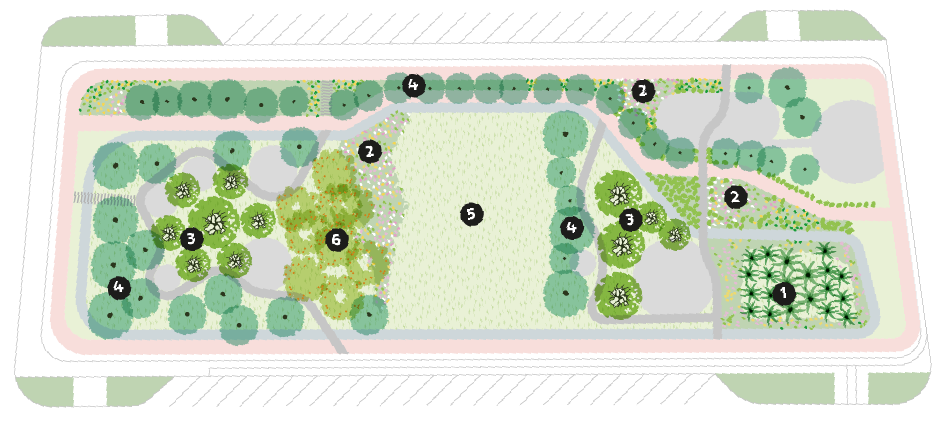
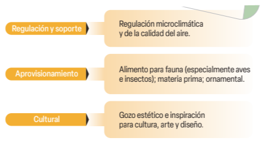
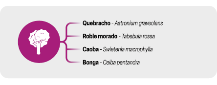
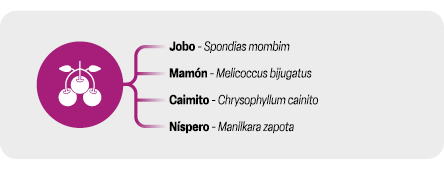
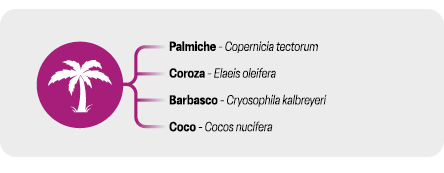

Servicios
ecosistémicos
asociados

Estímulos sensoriales: la selección y ubicación de árboles frutales de flor y fruto llamativo atraen polinizadores considerada espacios internos alejados de recorridos principales en los que la caída de frutos pueda generar conflicto o accidentes.
Especies de mayor porte. Se plantea la distingue que se generan competencias por luz y permiten desarrollar fases de regeneración en bosques.

Especies comunes en la región con detalle y precisos de alimentación, son vías sin fresco comerciada por la potencialidad local.

Especies de copa amplia y aparasolada, que generan sombras.

Especies de copa amplia y aparasolada, que generan sombras. Localizados estratégicamente en el parque como elementos de referencia de paisaje que generen un sentido de memoria y apropiación.